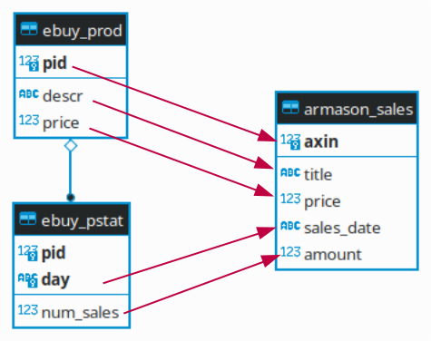

Prof. Dr.-Ing. Johannes Schildgen
johannes.schildgen@oth-regensburg.de
Data Warehousing
Chapter 4: ETL
Extract, Transform, Load


ETL Process
DW
Operat. DB
E
T
L
Data is periodically brought from the operational DBs into the data warehouse.
Extract data from multiple sources; change-data capture
Transform: data cleaning, conform, deduplicate
Load into data warehouse
Schema Integration vs. Data Integration
Schema Integration
Generate a minimal, correct, and understandable data-warehouse schema based on the existing schemas of the data sources.
Schema Matching: Finding correspondences between the schemas.
Data Integration
Transforming data from heterogeneous sources into the data-warehouse schema.
Data Cleaning: Detection and solving of data-quality problems.
Entity Matching: Detection of equivalent objects, deduplication.
Schema Integration: Requirements
Minimal
- Each concept only once
- No redundancy within the schema
- Mapping of same/similar concepts of the source schemas to a concept of the integrated schema
Correct
- Each concept corresponds to a concept of at least one local schemas
Understandable
- Humans can understand the integrated schema
- Names of concepts should be preserved where possible
↑
Schema Integration
Bottom-Up Integration
Mix all source schemas in a global schema.
- Schema Matching: Find inter-schema correspondences and conflicts
- Schema Mapping: Define how to translate one schema into another
- Schema Integration: Define an integrated global schema
Top-Down Integration
Integrated schema is designed independently from the sources,
based on the application requirements.
- Schema Mapping, Schema Merging
Heterogeneity
"Two information systems that do not provide the exact same methods, models, and structures to access their data are called heterogeneous."
-- translated from Leser, Naumann: Informationsintegration. 2007
Technical Heterogeneity
Different ways to access data.
E.g., different protocols (HTTP, ...), APIs (JDBC, ...), exchange formats (XML, ...), query languages (SQL, ...).
Data-Model Heterogeneity
Different data models have different expressiveness.
E.g., relational model, object-relational, XML, JSON, CSV, ...
How can we overcome technical and data-model heterogeneity?
- Write a wrapper script (e.g., in Python or Java)
- With SQL
- With special libraries and conversion functions
- That's (almost) impossible
https://fraage.de
Heterogeneity
Syntactic Heterogeneity
Different representation of the same facts.
E.g., different encodings, number/date formats (2022-01-31 vs. 31.03.22), ...
Semantic Heterogeneity
Different interpretation of data and metadata.
E.g., synonyms (phone_no, mobile_no, phone), homonyms (title), ...
Hard to resolve ⇒ Schema Matching
Heterogeneity
Structural Heterogeneity
Different modelling of application concepts using the same modelling concept.
E.g., normalized vs. denormalized schema.
MARKETS(market_id, city_id) CITIES(city_id, city)
vs. MARKETS(market_id, city)
Schematic Heterogeneity
Different modelling of application concepts using the different modelling concept.
E.g., attribute value vs. relation name conflict
BOOKS(id, title, price) MOVIES(id, title, price)
vs. PRODUCTS(id, title, price, media_type)
Schema Matching
Finding correspondences between two schemas
- Input: Multiple Schemas (optional: example data, background knowledge)
- Output: Pair-wise correspondences between schema elements
Example: A retailer sells its products on eBuy and Armason
ETL vs. ELT
ETL
for each input row:
take input row -- Extract
check data quality -- Transform
deduplicate -- Transform
harmonize / normalize data -- Transform
try to insert into target -- Load
handle exceptions -- LoadELT
identify possible error cases
import all rows -- Extract + Load
check data quality -- Transform
deduplicate -- Transform
harmonize / normalize data -- TransformExasol's IMPORT command
Directly import / export data from / to
- other Exasol databases,
- Oracle databases,
- generic databases (using JDBC),
- files (CSV, FBV; local or on a server)
- UDF scripts (written in Java, Lua, Python or R).
IMPORT
FROM EXA
FROM ORA
FROM JDBC
FROM CSV|FBV
FROM SCRIPT
IMPORT INTO markets FROM EXA AT '10.10.10.11:8563'
USER 'sys' IDENTIFIED BY 'exasol' TABLE retail.markets;IMPORT INTO markets FROM JDBC
AT 'jdbc:postgresql://10.10.50.1/my_db'
USER 'myuser' IDENTIFIED BY 'mypassword'
STATEMENT 'SELECT * FROM shop.markets WHERE country = ''DE'';';Connections in Exasol
Instead of directly writing connection details (host, user, password) in the IMPORT / EXPORT command, these credentials can be stored in a connection object:
CREATE CONNECTION jdbc_conn
TO 'jdbc:postgresql://10.10.50.1/my_db'
USER 'myuser' IDENTIFIED BY 'mypassword';IMPORT INTO markets FROM JDBC AT jdbc_conn
STATEMENT 'SELECT * FROM shop.markets WHERE country = ''DE'';';Importing Files
File import from (S)FTP/HTTP(S) server
CREATE CONNECTION sftp_conn TO 'sftp://10.60.102.2'
USER 'sftpuser' IDENTIFIED BY 'sftppassword';IMPORT INTO markets FROM CSV AT sftp_conn
FILE '/data/shop/markets.csv';Importing local files (from client file system)
IMPORT INTO markets FROM LOCAL CSV FILE 'D:\shop\markets.csv';Parameters for CSV Import
IMPORT INTO markets (market_id, city, last_modified)
FROM LOCAL CSV FILE '/data/shop/markets.csv'
(1, 5, 8 FORMAT = 'YYYYMMDD') -- Default: all columns
ENCODING = 'latin-1' -- Default: UTF8
ROW SEPARATOR = 'CRLF' -- Default: LF
NULL = '-' -- Default: empty string
COLUMN SEPARATOR = '|' -- Default: ,
COLUMN DELIMITER = '=' -- Default: "
SKIP = 1; -- Default: 0How should a row of the CSV file that is imported here look like?
- 1,2,3,4,5,6,7,8
- 1|2|3|4|a||b|6|-|20220530
- 1|2|3|4|"a||b"|6|-|20220530
- 1|2|3|4|=a||b=|6|-|20220530
https://fraage.de
Import - Error Handling
Default behavior: On error, the whole import is aborted, nothing will be imported.
Error Table
IMPORT INTO markets FROM LOCAL CSV FILE 'D:\shop\markets.csv'
ERRORS INTO my_error_table REJECT LIMIT UNLIMITED;SELECT * FROM my_error_table;How to solve this error?
- Change file encoding
- SKIP=1
- Change column delimiter
- Change order of columns
https://fraage.de
Import in Exasol: Performance
Exasol supports imports of zipped CSV files:
IMPORT INTO sales FROM LOCAL CSV FILE 'D:\shop\sales.tar.gz'Parallel Import
IMPORT INTO sales FROM CSV AT sftp_conn
FILE '/data/shop/sales.zip.001'
FILE '/data/shop/sales.zip.002'
FILE '/data/shop/sales.zip.003';IMPORT INTO sales FROM JDBC AT jdbc_conn
STATEMENT 'SELECT * FROM shop.sales WHERE sales_id < 1000000'
STATEMENT 'SELECT * FROM shop.sales WHERE sales_id >= 1000000';Best practice: Number of parts = number of cluster nodes.
ETL: Extract
Data is extracted from multiple sources.
When?
- Initial load
- Periodically propagate changes
| Data source... | Technique | Up-to-dateness | DWH load | Source load |
|---|---|---|---|---|
| periodically creates files | Batch jobs, snapshots | depends on frequency | low | low |
| propagates every change | trigger, replication | max | high | very high |
| extract on demand | triggered by application | depends on frequency | depends on frequency | depends on frequency |
Change Data Capture
Find out what has changed since the previous run.
Different approaches:
- Audit Columns: Data contains timestamps of creation / last modification
- Snapshot Differential: Keep the old snapshot of the data and
compute diff with current version
$\Delta_{Insert} = S_x - S_{x-1}, \Delta_{Delete} = S_{x-1} - S_{x}$
- Log-based: The DB's write-ahead log contains all change information
2022-03-30 INS 17 description='chocolate bar' price=0.99 2022-04-01 UPD 17 price=0.89
Snapshot Differential with SQL
Given: P1 (previous snapshot of products file), P2 (new / current snapshot).
INSERT INTO delta
SELECT 'UPD', P2.* FROM P1, P2
WHERE P1.productno=P2.productno AND (P1.price!=P2.price OR ...)
UNION ALL
SELECT 'INS', P2.* FROM P2
WHERE NOT EXISTS(SELECT * FROM P1 WHERE P1.productno=P2.productno)
UNION ALL
SELECT 'DEL', P1.* FROM P1
WHERE NOT EXISTS(SELECT * FROM P2 WHERE P1.productno=P2.productno);Data Quality - Data Errors
ETL: Transform
After extraction, data has to be normalized and cleaned.
Data Cleaning
- identify data-quality problems (data profiling)
- identify causes for theses errors
- standardize / normalize data items
- correct errors
- duplicate detection, merging
- (aggregation, feature extraction)
- (sampling)
- ...
Data Scrubbing
Resolve errors within individual data items
- Normalization: unify case, stemming, remove stopwords, expand acronyms
'CHEAPEST car with ACC' => 'cheap car automatic cruise control'
- Conversion: convert numerical values to a single unit
70 => 177.8(inch to cm)
- Outlier removal: test if data fulfill constraints
person's age = 5555=> remove record
Schema Mapping
In the transform phase, the data has to be mapped from the source schema to the target schema.
INSERT INTO sales
SELECT P.pid, P.descr AS title,
P.price, S.sales_day As sales_date,
S.num_sales AS amount
FROM ebuy_prod P JOIN ebuy_pstat S
ON P.pid = S.pid;
INSERT INTO sales
SELECT axin AS pid, title, price,
sales_date, amount
FROM armason_sales;Entity Resolution
Resolve problems involving multiple data items
Duplicate Detection
- Pair-wise comparison of data items, calculating similarity values
- If similarity > threshold: duplicate detected
- False positives and false negatives possible
- Very expensive: $O(n²)$ comparisons
- Optimization: Partition data and only compare items within a partition
Data Fusion: Combine detected duplicates into one data item
Similarity Functions
Levenshtein Distance
Number of character insertions + deletions + replacements
to transform one string into the other.
$sim_{levenshtein}("mouse", "home") = 3$
SELECT edit_distance('mouse', 'home');What's the Levenshtein distance between "datawarehouse" and "database"?
- 6
- 7
- 8
- 9
https://fraage.de
Jaccard Similarity
Similarity of two sets $S_1$ and $S_2$:
$sim_{jaccard} = \frac{|S_1 \cap S_2|}{|S_1 \cup S_2|}$
For String Similarity: q-grams
q-gram: Set of all substrings of length q.
$bigram("hello") = \{he, el, ll, lo\}$
$sim_{2gram}("food", "foot") = \frac{\{fo, oo\}}{\{fo, oo, od, ot\}}=\frac{2}{4}=0.5$
Soundex
Words that sound similar have the same soundex value.
- Retain the first letter
- Of all other letters, remove A, E, I, O, U, H, W, Y.
- Replace consonants with digits (if two adjacent letters in the original word have the same digit, only retain it once)
B, F, P, V 1 C, G, J, K, Q, S, X, Z 2 D, T 3 L 4 M, N 5 R 6 - If there are less than 3 digits, fill up with zeros.
$soundex("food") = F300, soundex("foot") = F300, soundex("fool") = F400$
Similarity Join
Bring together similar data, for deduplication.
SELECT c1.name, c2.name, edit_distance(c1.name, c2.name)
FROM customers c1, customers c2
WHERE edit_distance(c1.name, c2.name) < 3;SELECT c1.name, c2.name, soundex(c1.name)
FROM customers c1, customers c2
WHERE soundex(c1.name) = soundex(c2.name);Problem: Very expensive! $O(n²)$ comparisons.
Similarity Join: Blocking
Partition data into blocks and only compare within blocks.
$n$ records, $b$ blocks ⇒ $O(b \cdot (\frac{n}{b})^2) = O(\frac{n²}{b})$ comparisons.
Partitioning Strategies:
- Same zip code (asuming no typo in zip code)
- First letter of name (again, assuming no typo here)
- ...
⇒ Risk of missing duplicates!
SELECT c1.name, c2.name, soundex(c1.name)
FROM customers c1, customers c2
WHERE substr(c1.name, 0, 1) = substr(c2.name, 0, 1)
AND edit_distance(c1.name, c2.name) < 3;Which duplicate names will be detected with the primitive approach but not with the query on this slide?
- Klinger, Klingler
- Klinger, Klingborn
- Klinger, Clinger
- Klinger, Clingborn
https://fraage.de
Data-Quality Checks with SQL
Step 1: Identify possible errors and set error codes accordingly.
ALTER TABLE staging.customer ADD COLUMN error_info VARCHAR(100);UPDATE staging.customer SET error_info = 'Invalid email'
WHERE email NOT REGEXP_LIKE '.*@.*\.[a-z]{2,}';UPDATE staging.customer SET error_info = 'Duplicate email address'
WHERE cust_id IN (SELECT cust_id WITH INVALID UNIQUE(email)
FROM staging.CUSTOMER);Step 2: Integrate error-free rows into data warehouse (using INSERT or MERGE).
INSERT INTO dwh.customer SELECT * FROM staging.customer
WHERE error_info IS NULL;DELETE FROM staging.customer WHERE error_info IS NULL;Step 3 (optional): Inspect erroneous rows and solve errors.
ETL: Load
In the load phase, the data is integrated in the data warehouse.
Techniques:
- ETL Tools: insert data items via JDBC, ... (Push approach)
- Alternative: bulk load (Pull approach)
SQL: MERGE Command
The MERGE command was introduced in SQL:2008 and combines INSERT, UPDATE and DELETE.
MERGE INTO <target>
USING <source>
ON <join_condition>
WHEN [NOT] MATCHED THEN [INSERT... |UPDATE...|DELETE...] ...;Source row is inserted into target table if not yet present, otherwise updated (or deleted) there.
MERGE INTO products P
USING products_new N
ON P.productno = N.productno
WHEN MATCHED THEN UPDATE SET P.title = N.title, P.price = N.price
DELETE WHERE N.title IS NULL
WHEN NOT MATCHED THEN INSERT VALUES (N.productno, N.title, N.price);Summary
- ETL = Extract, Transform, Load
- Schema Integration: Schema Matching, Schema Mapping
- Forms of Heterogeneity
- ETL vs. ELT
IMPORT- Extract Phase: Change-Data-Capture
- Transform Phase: Data Cleaning, Normalization, Schema Mapping, Entity Resolution, Deduplication...
- Load Phase: Load data into DWH
MERGE